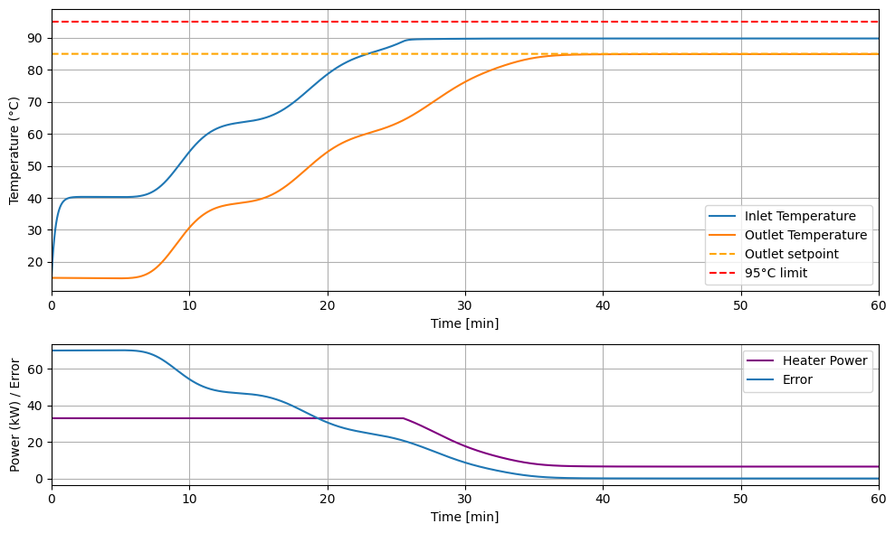
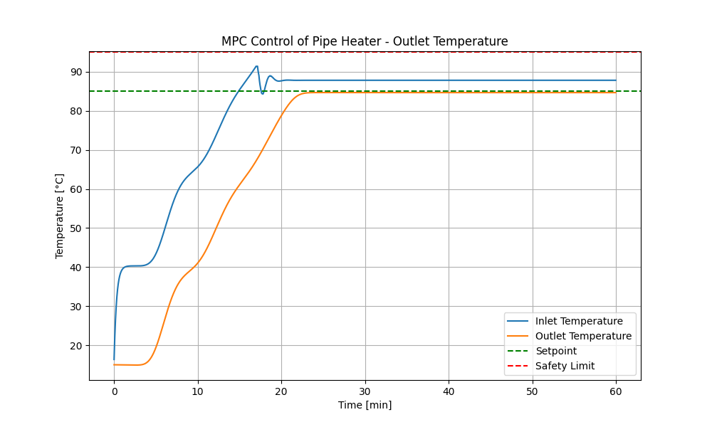
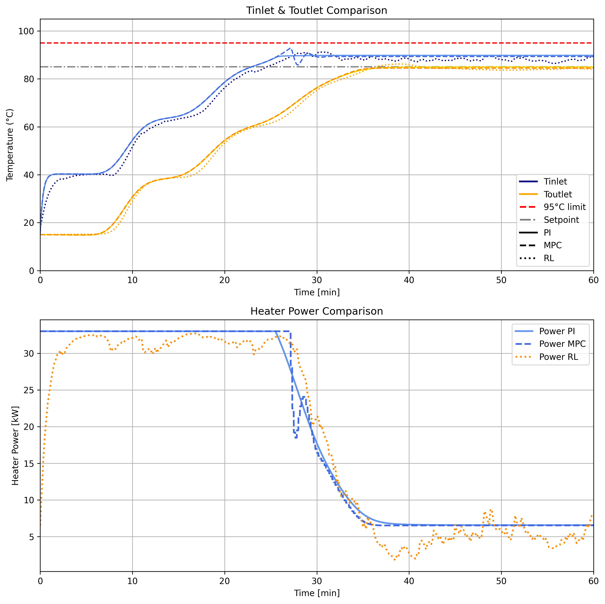
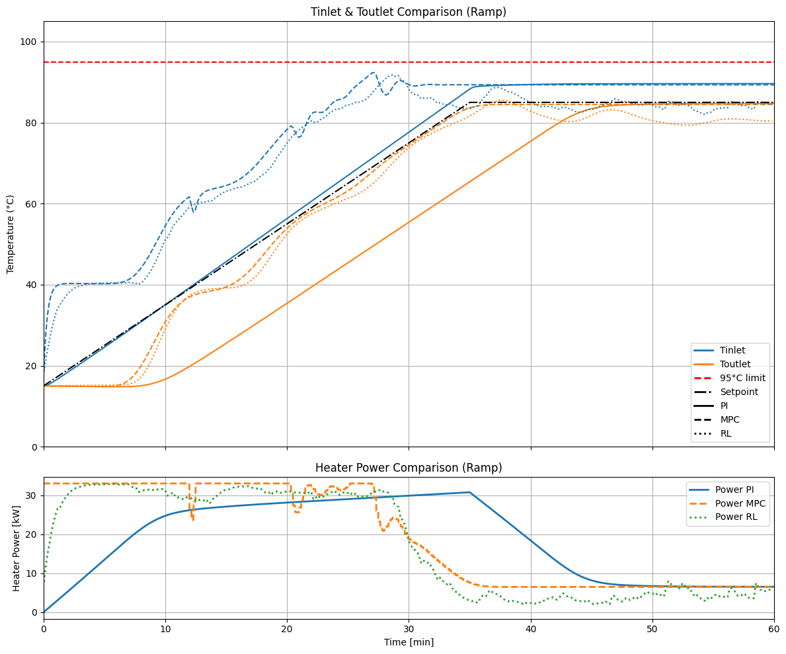

Here is a well-structured README.md for your Heated Pipe System with Heat Loss project, including key visuals and explanations:
Heated Pipe System with Heat Loss#
A tutorial on regulating the outlet temperature of a 450-meter heat pipe near its boiling point, comparing PI, MPC, and Reinforcement Learning control strategies.
📌 Overview#
This project demonstrates how to regulate the outlet temperature of a 450-meter heat pipe loop for bacteria decontamination, ensuring:
Outlet temperature > 85°C
Inlet temperature < 95°C
Heating rate of 2°C/min
No steam formation
The system is modeled, simulated, and controlled using three approaches: PI control, Model Predictive Control (MPC), and Reinforcement Learning (RL).
🔍 System Description#
Physical Setup#
A 450-meter circular pipe with continuous water flow.
A heater at the entrance provides constant power.
Water loses heat to the environment via convection.
The water returns to the heater, creating a closed loop.
Challenges#
Stair-like temperature behavior due to water recirculation.
Significant delay (~12 min) between input and output.
Coupling between inlet and outlet temperatures.
Security constraints: Avoid boiling water or steam.

📊 System Modeling#
Physical Model#
The temperature evolution is governed by the PDE:
Simulation#
The pipe is divided into segments.
Each segment’s temperature is updated based on neighbors and the environment.
The heater injects warmth, and the animation shows heat propagation.

🎛️ Control Strategies#
1. PI Control (Proportional-Integral)#
Equation:
Gain scheduling ensures inlet temperature stays below 95°C.
Performance: Excellent for constant setpoint tracking.

2. Model Predictive Control (MPC)#
Objective: Minimize tracking error and input usage over a prediction horizon.
Constraints: Inlet/outlet temperatures ≤ 95°C, power ≤ 33 kW.
Advantage: Handles constraints inherently.


3. Reinforcement Learning (RL)#
Environment: Heater power as action, temperatures as observations.
Reward: Balances setpoint tracking, smooth control, energy usage, and safety.
Algorithm: Soft Actor-Critic (SAC).
Performance: Struggles with precise tracking but is flexible.

📈 Comparison & Conclusion#
Criteria |
PI Control |
MPC |
RL |
|---|---|---|---|
Performance on Step |
✅ Excellent |
✅ Very good |
❌ Shaky |
Performance on Ramp |
❌ Needs tuning |
✅ Very good |
❌ Needs training |
Security |
⚠️ Gain scheduling |
✅ Inherent |
❌ Must be tested |
Complexity/Flexibility |
✅ Low |
❌ High |
⚠️ Retraining |
Running Frequency |
✅ 1Hz |
❌ 0.1Hz |
✅ 1Hz |
Step input comparison :

Ramp input comparison :

Key Takeaways#
PI control is simple and effective for constant setpoints.
MPC is robust and handles constraints but is computationally heavy.
RL is flexible but requires extensive training and validation.
📂 Appendix#
Parameters#
(x): Position (m)
(T(x, t)): Temperature (K)
(u): Fluid velocity (m/s)
(P): Heater power (W)
(K): Heat loss coefficient
Simulation Details#
Impact of heat loss coefficient and external temperature:

🔧 How to Use#
Clone the repository.
Install all required libraries: numpt, matplotlib, cvxpy, gymnasium, stable-baselines3
Run the Jupyter notebook system_tutorial for simulations.
Tune parameters for your specific use case.
💡 Which Controller Would You Choose?#
For simplicity and constant setpoints: PI control.
For robustness and constraints: MPC.
For flexibility and model-free scenarios: RL.